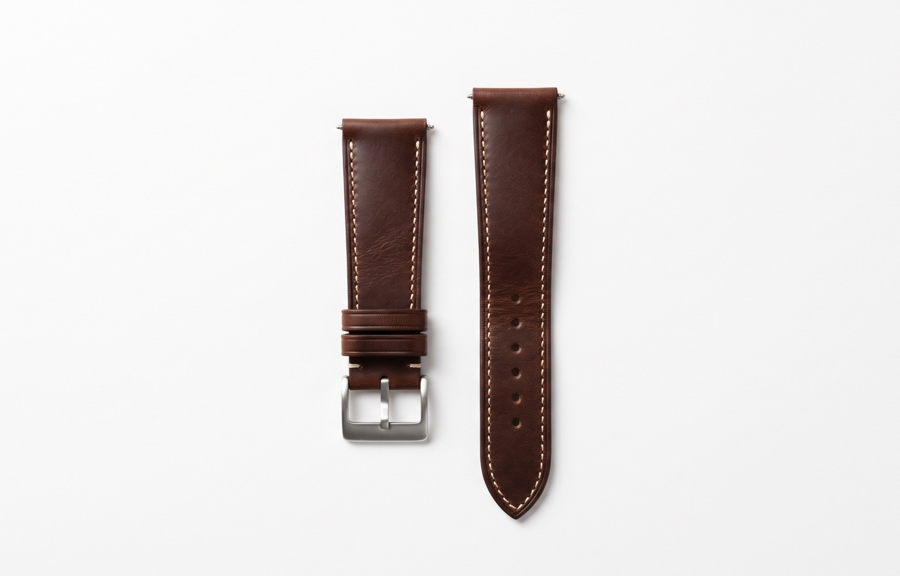

중급 · 커스텀 추천
워치 스트랩
시계가 있으세요? 직접 만든 스트랩으로 분위기를 바꿔 보세요.
₩15,000부터 · 즉시 다운로드 · PDF
자세히 보기중급 · 스타일 추천 · NEW
더블 투어 스트랩
손목을 두 바퀴 감아 차는 스트랩. 긴 부품도 A4 정렬 표시만 맞추면 한 장처럼 이어집니다.
₩18,000부터 · 즉시 다운로드 · PDF
자세히 보기입문 · 실용 추천 · NEW
클래식 가죽 벨트
몸통은 길이표대로 자로 자르고, 끝 모양과 버클 쪽, 구멍 간격만 도안대로. 처음이어도 반듯한 벨트가 나옵니다.
₩15,000부터 · 즉시 다운로드 · PDF
자세히 보기